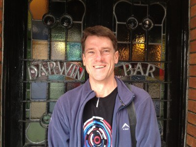
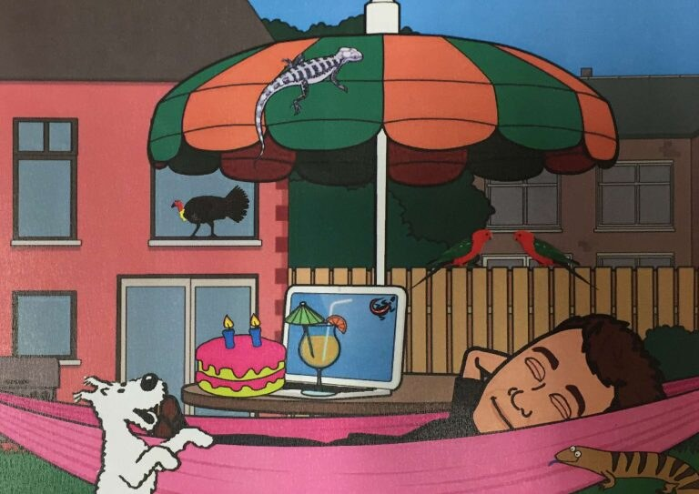
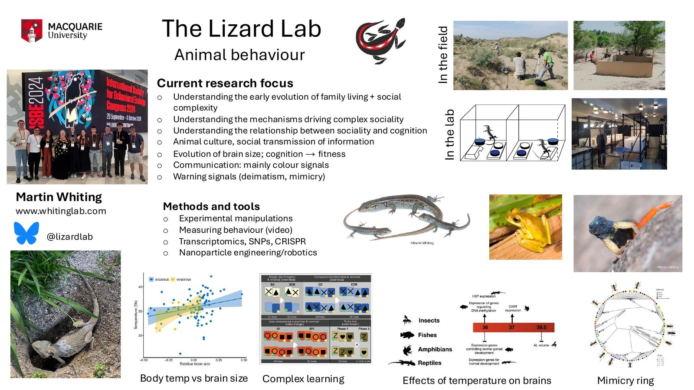

Professor of Animal Behaviour
Martin Whiting
Behavioural ecologist · School of Natural Sciences · Macquarie University




Research
My research
My fieldwork has taken me to North America, southern and eastern Africa, Hawai‘i, Sri Lanka, China, Sulawesi and Australia. Increasingly, we work with lizards on campus, at the Fauna Park, under controlled conditions.
My research falls into three basic themes:
Communication: evolution and function of colour signals and dynamic display behaviour.
Social behaviour: evolution of kin-based sociality, plasticity of social behaviour, and the mechanisms underlying sociality.
Cognition: evolution of brain size in lizards, social learning, culture, and the relationship between sociality and cognition.